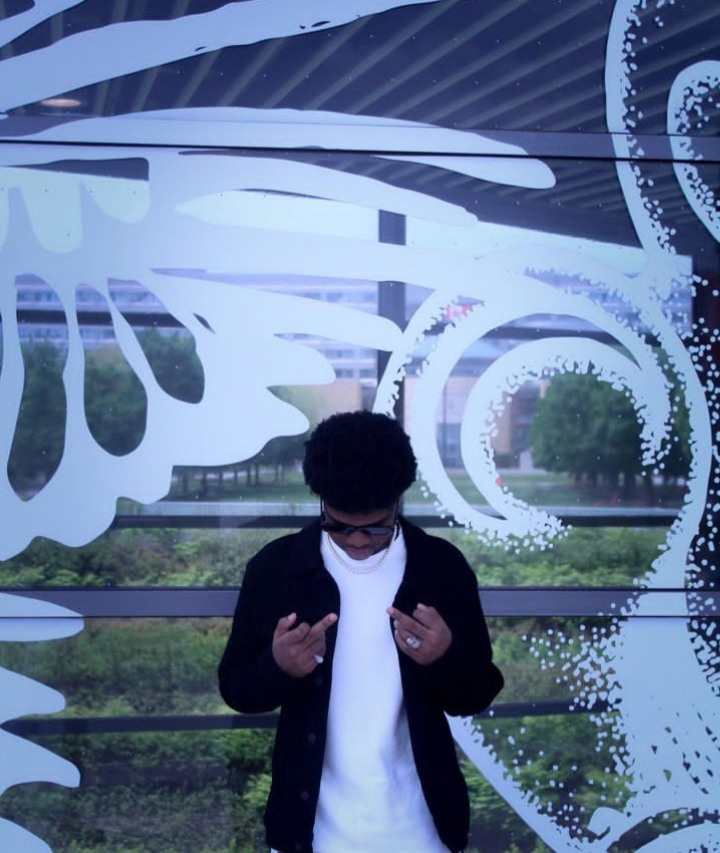

JOHNPAUL-PHOTOGRAPHY
John Paul, a talented photographer,
embarked on his photography journey in April 2023.
With a keen eye for capturing momemts,
he quickly honed his skills and developed
a unique style. John Paul's passion for
photography drives him to explore various
subjects, capturing the beauty of nature,
people, nad everyday life. His work showcases
his creativity, attention to detail, and ability to
evoke emotions through his photographs.
John Paul's career is just beginning, and we
can expect great things from this budding
photographer!
